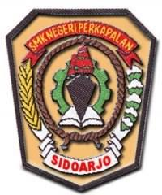

SMK Bisa!!!
Belajar teknologi untuk membangun bangsa.
Profil Sekolah

SMK Negeri 3 Sidoarjo adalah salah satu sekolah unggulan di Kabupaten Sidoarjo. Sejak didirikan pada tahun 1990, SMK Negeri 3 Buduran telah berkomitmen untuk memberikan pendidikan berkualitas tinggi kepada siswa-siswinya.
Sekolah kami memiliki berbagai fasilitas lengkap seperti laboratorium, perpustakaan, lapangan olahraga, dan aula serbaguna. Dengan dukungan guru-guru berkompeten dan staf yang ramah, kami bertujuan untuk menciptakan lingkungan belajar yang kondusif dan menyenangkan.
Visi sekolah kami adalah menjadi lembaga pendidikan yang menghasilkan lulusan berkualitas, berprestasi, dan berakhlak mulia. Misi kami meliputi:
- Menyelenggarakan proses belajar-mengajar yang efektif dan inovatif.
- Menumbuhkan karakter dan nilai-nilai moral yang kuat pada siswa.
- Mengembangkan bakat dan minat siswa melalui berbagai kegiatan ekstrakurikuler.